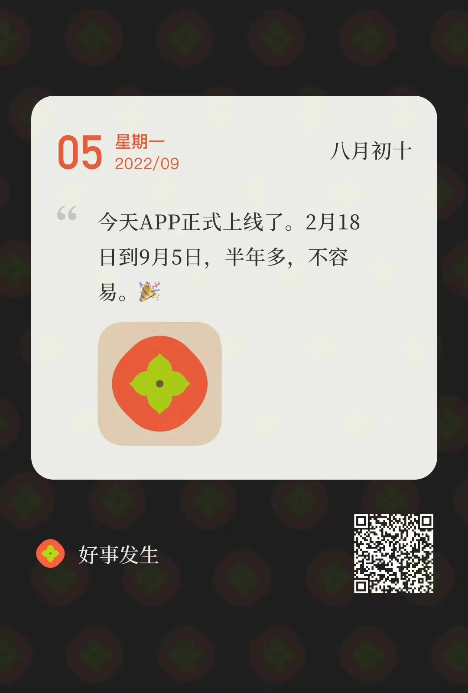
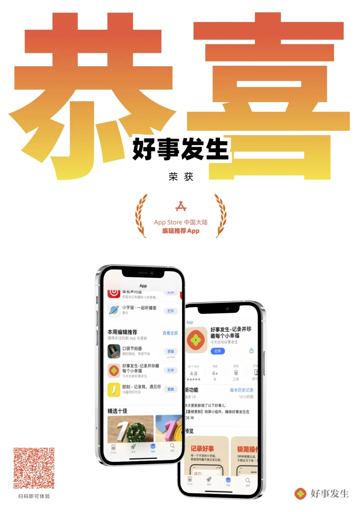
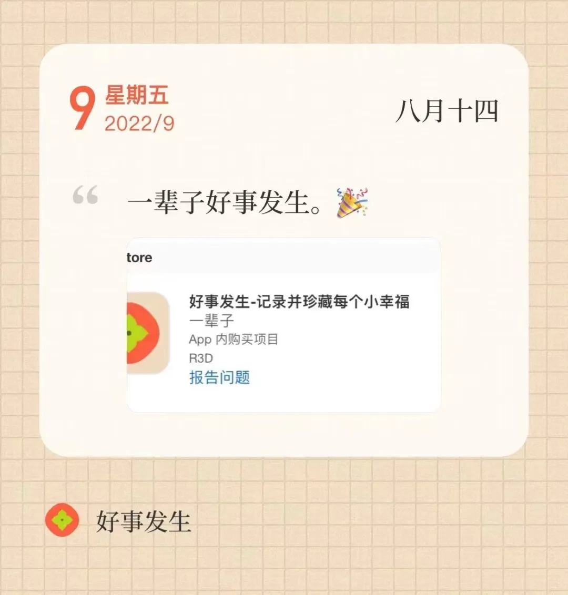

开发故事
了解“好事发生”是从何而来的
设计初衷
你好，我是好事发生App的开发者王梦珂。
总被人问我为什么看起来这么积极，我想说我不一定时时快乐，但幸福一定需要学习。
之前跟大家分享过我对抗抑郁的方法：为了对抗负面情绪，不陷入无限循环的自我PUA，我坚持记录开心的事情，并且抑郁的时候看。
但我一直没有发现什么好用的记录工具。在过去，我用笔记软件开文档写，不趁手，也不好看。同时还会出现各种各样的问题：比如被我手滑删掉了，光标放错位置，文件同步出问题，也显得没有那么有仪式感，等等。
于是我自己做了一个。
“好事发生”是为你专门记录好消息的软件。我们相信多看好消息，就会发生好消息，这就是神奇的好消息聚集效应。
创作背后
「好事发生」是我的 night job，跟 day job 分开，和上班毫无关系。是一个我真正想做的需求，为自己做的需求，为“人”做的需求。
在我看来这是一个真正的作品，产品经理应该为“人”做需求。好的创作不是表达自己，而是构造世界。我搞了一个小世界出来。
这很不容易。其实文档很早就写完了，中间我又改需求，希望它尽善尽美，为人所用。然后中间工程师考驾照，我也认为考驾照非常重要，支持他考驾照。
谢谢我的工程师和设计师没有因为我的絮叨打我，不过他们都很专业，对于产品经理就是会改需求这件事已经很习惯了。大家认认真真，付出几乎所有的业余时间。我们都不是来玩的。
对了，「好事发生」的工程师痘师傅同时是一名乐手，中间忙于排练，也耽误了一些排期。
总的来说，因为这样那样的原因，这个App的上线时间就比预期时间晚了一些，跟我的工程师的演出一样，莫名其妙地被疫情耽搁了。
现在，痘师傅的驾照已经下来了，演出举办得也很顺利。
从 0 到 1，花了半年。它牺牲了我很多做别的事情的时间，我不能玩，要少睡觉，但它被很多人喜欢，这比好还好。
上线与荣誉
2022年9月5日，「好事发生」正式上线。

9月6日（上线次日）即被 PriceTag 推荐：
⁹/₆ PriceTag 应用日报推荐应用：好事发生
2022年9月23日，荣获 App Store 中国大陆编辑推荐 App：

感谢所有支持和帮助过我们的人，感谢我的工程师 痘师傅 和我的设计师 大Q，谢谢你们的信任，还好我们坚持了下来，好事发生 Goodhappens，好事发生了。
目前，好事发生仍在以一个月至少发一个新版本的节奏更新新功能、新主题，希望带给你更好的使用体验，步履不停。
把开心的事情写下来吧，就从今天开始。
